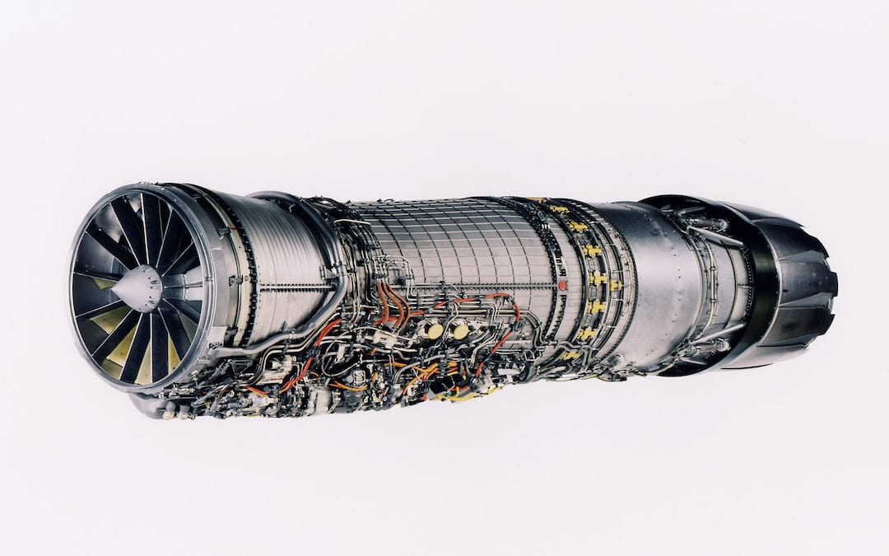
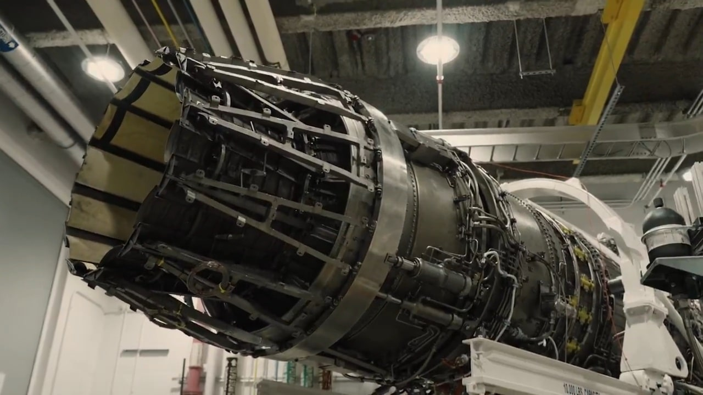

Hands-on engineering work spanning aerospace, vehicle performance, digital systems, and product development.
Contributed to performance and operability work across three aircraft engine programs. Performed engine-cycle simulation and model checkouts for GE426, analyzed operability trends for the F110-129E, and supported on-site transient testing of the F110-AVEN, including real-time monitoring of key engine performance parameters.

GE Aerospace F110 turbofan engine. Image: GE Aerospace.
Used NPSS to perform engine-cycle model checkouts for the GE426 program, evaluating performance across operating conditions to verify model behavior and ensure compressor and combustor operability.
Supported on-site transient testing of the F110-AVEN with a 3D thrust-vectoring nozzle, monitoring thrust, fan speed, core speed, and other engine parameters in real time. Used the resulting test data to assess engine behavior and make data-driven recommendations for subsequent test conditions and testing priorities.

GE Aerospace F110-AVEN engine. Image: GE Aerospace.
Alongside my technical internship, I participated in the GE Aerospace Intern Ambassador Program, supporting incoming interns and collaborating with HR on introduction and promotional videos for recruiting and outreach.
Work on vehicle performance and driver development for MIT's Formula Electric racecar, using telemetry and simulation data to improve vehicle setup and driving performance.
Analyze vehicle speed, slip angle, cornering forces, and other telemetry data to identify opportunities for improved vehicle setup and driver performance.
Use driver simulation data to help train new drivers and reinforce driving strategies aimed at achieving faster and more consistent laps.
Supported digital systems and supply-chain technology at GE Aerospace, focusing on enterprise workflows and supplier onboarding.
Supported Oracle Fusion Supply Chain ERP as a technical developer and contributed to migrating supplier onboarding workflows to Oracle Cloud.
Led the development of a semiconductor thin-film transfer device, combining technical prototyping with customer discovery and product-development decisions.
Designed and prototyped a semiconductor thin-film transfer system while working with industry professionals and target customers to translate technical requirements into product features and design decisions.